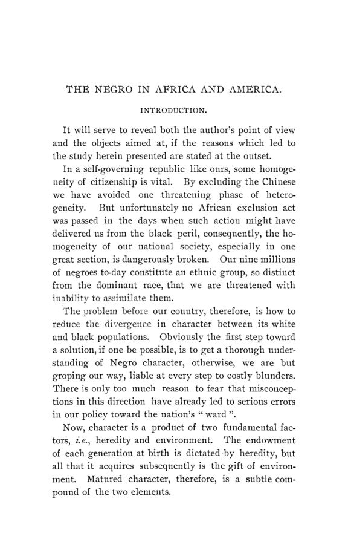

Tillinghast, 1902: trabalho, terra e propriedade depois da abolição
Leitura: 9 min
Em 1902, Joseph Alexander Tillinghast reuniu relatos de viajantes, censos e boletins do Departamento do Trabalho para discutir trabalho, agricultura e propriedade da população negra dos EUA. O livro e suas fontes, descritos.


Fayetteville, Carolina do Norte, 1899. Uma fábrica de seda abre as portas com operários negros, sob a gerência de um certo Thurston, que agia em nome de industriais da seda de Paterson, Nova Jersey. Em pouco tempo, segundo Joseph Alexander Tillinghast, havia 400 operários e 10 mil fusos. O autor tira o caso do Journal of Commerce, de Nova York, e do Charlotte Observer, e faz dele a ilustração central do capítulo sobre o trabalho. A fábrica dava resultado, registra, mas sob uma disciplina que o próprio gerente descrevia como a mais estrita e que, conforme o correspondente do jornal, incluía castigos físicos aos operários menores de 21 anos.
O caso está em The Negro in Africa and America, publicado em maio de 1902 como volume 3, nº 2, da terceira série das Publications of the American Economic Association, em 231 páginas. O prefácio é de Walter F. Willcox, de Ithaca, Nova York. Ele apresenta o autor como um branco do Sul, filho de senhor de escravos, que fez a pesquisa numa universidade do Norte, numa biblioteca cujo núcleo sobre o tema era uma coleção antiescravista. Para Willcox, o mérito do livro é que ele
“reúne duas linhas de investigação que até então eram mantidas separadas” (“brings together two lines of investigation which have hitherto been kept asunder”)
As duas linhas são a etnografia da África Ocidental e a história da população negra nos Estados Unidos. O livro tem três partes: a África Ocidental, em sete capítulos; a escravidão americana, em oito; e o período de cidadania livre, em cinco. Na introdução, Tillinghast sustenta que o caráter de um povo resulta de hereditariedade e ambiente, e que a explicação corrente, que atribuía à escravidão as diferenças observadas, ignorava o período africano.
Que economia o autor descreve na África Ocidental?
O capítulo “Economia industrial” se apoia em relatos de viajantes e comerciantes europeus: Bosman, Barbot, Proyart, Du Chaillu, Ellis e Miss Kingsley. De Bosman vem a descrição de um pequeno grupo de artesãos nas tribos da Alta Guiné, que faziam copos de madeira e de barro, braceletes de ouro, cobre ou marfim, tiras estreitas de tecido e trabalhos simples de ferraria.
Sobre moeda, Tillinghast registra os búzios como a forma de maior circulação na Alta Guiné; os “macutes”, peças de pano de uma jarda, entre os nativos de Luanda em 1666; e a manilha, bracelete de liga de cobre usado na Costa do Marfim, que se tornava mera ficha convencional. Segundo Du Chaillu, do litoral ao interior a unidade comercial de valor era o escravo, em que se contavam multas e dotes. Daí o autor conclui que essas moedas serviam mal como instrumento de troca e que o escambo continuava a predominar.
Como o livro trata o trabalho sob a escravidão?
Tillinghast descreve a escravidão como uma escola de trabalho cujos lucros ficavam com os senhores, e diz que lucro e controle eram os dois traços fundamentais do sistema. Com Frederick Law Olmsted, o diário de Fanny Kemble e as memórias de V. V. Clayton, identifica em 1863 quatro grupos: trabalhadores do eito, artesãos e operários, empregados domésticos e capatazes ou administradores.
O autor atribui a diferença a dois fatores: aos defeitos da escravidão como escola de trabalho e a traços que considera herdados.
Que dados ele reúne sobre a agricultura depois de 1865?
O capítulo “Progresso industrial”, nas páginas 176 a 193, é feito quase todo de fontes de segunda mão: Race Traits, de Frederick L. Hoffman (1896); The Plantation Negro as a Freeman, de Philip A. Bruce; dois estudos de Du Bois; boletins do Departamento do Trabalho; Henry Gannett e Alfred H. Stone; e uma conferência de Willcox de 1899. O autor soma observações próprias nas Carolinas e em Washington.
Para o fumo, Tillinghast reproduz Hoffman: em cinco condados da Virgínia com maioria negra, a produção, de 30.504.090 libras em 1859, caiu até 1889. Em Pittsylvania, de maioria branca, subiu de 7,8 milhões para 12,3 milhões de libras. Em quatro condados do Kentucky com menos de 5% de população negra, passou de 90.338 para 10.044.856 libras. O próprio autor lista explicações alternativas: solo esgotado, migração para as cidades e, no Kentucky, terra nova.
No algodão, Hoffman é de novo a fonte: o Texas, com menos da metade da população negra do Mississippi, teria produzido em 1894 quase o triplo da safra deste, e o Mississippi, com quase o dobro da população negra de 1860, colhera em 1894 menos algodão que 34 anos antes. Willcox estimava que ao menos quatro quintos do algodão de 1860 eram cultivados por negros e que, na época, provavelmente nem metade.
O que acontecia com os ofícios qualificados?
Pelo censo de 1890, no estudo de Gannett, 85% dos homens negros com ocupação remunerada estavam na agricultura ou no serviço doméstico. Entre as mulheres, 44% estavam na agricultura e cerca de 4% fora desses dois setores. Tillinghast avisa sobre o limite da série:
“Os resultados do décimo segundo censo sobre essa questão ainda não estão disponíveis” (“The results of twelfth census on this question are not yet available”)
Para os ofícios, o autor reúne depoimentos. Booker T. Washington, em The Future of the American Negro, relatava que nenhum jovem carpinteiro negro pudera substituir um velho construtor formado na escravidão. Washington atribuía o deslocamento aos mecânicos brancos vindos do Norte e aos sindicatos, não ao preconceito dos brancos do Sul; Du Bois, na Filadélfia, atribuía boa parte dele ao preconceito. Tillinghast lê os depoimentos como prova de que a causa não era o preconceito e atribui o recuo às escolhas da geração nascida depois da guerra.
Quanta propriedade se acumulou desde a guerra?
Pelo censo de 1890, citado por Gannett, das 549.632 fazendas ocupadas por negros, 22% eram de propriedade dos ocupantes, e 10% destas tinham hipoteca. Das moradias ocupadas por negros, 19% eram próprias, 13% delas oneradas. Na Filadélfia, Du Bois encontrou entre 5% e 6% de proprietários de casa.
Tillinghast resolve a aparente contradição com dois argumentos econômicos. O primeiro ele credita a Hoffman:
“Valor maior não implica necessariamente poupança maior, por causa do ‘incremento não ganho’” (“Increased value does not necessarily imply increased saving, owing to the ‘unearned increment’”)
O segundo é uma assimetria. Sem propriedade no início, os libertos só puderam comprar a terra mais barata, a terra marginal que não rende renda. Ela podia se valorizar, mas tinha pouco a perder. Tillinghast testa ainda a hipótese de Bruce, de que poucos dos que eram crianças no fim da guerra haviam adquirido terra, e admite não ter chegado a conclusão: os registros não informavam a idade dos donos. Sua conclusão geral, ainda assim, é que a maioria enfrentava uma desvantagem que ele atribui a características herdadas e que a liberdade econômica não produzira o resultado que muitos esperavam.
Na minha leitura
Na minha leitura, o valor documental do capítulo econômico está no inventário de fontes que ele reúne em 1902: censos, boletins do Departamento do Trabalho, avaliações fiscais e monografias da época. As séries agrícolas são comparações entre condados e estados em dois pontos do tempo, e o próprio autor enumera o que pode interferir nelas: solo esgotado, migração para as cidades, terra nova. Nenhuma tabela controla solo, crédito, preço da terra ou salário, e Tillinghast reconhece que não é possível medir com exatidão quanto de cada diferença cabe a cada causa que discute.
O trecho mais técnico é o de patrimônio. A distinção entre valorização de ativos e poupança, e a observação de que quem começa sem nada só compra terra marginal, cuja variação de preço é assimétrica, valem para qualquer estudo de acumulação de riqueza. E a dúvida que o autor não resolve, por falta da idade dos proprietários, mostra como a pergunta econômica fica presa ao formato do registro administrativo disponível.
Glossário
- Búzios (cowries)
- conchas usadas como moeda em partes da África Ocidental.
- Manilha
- bracelete de liga de cobre usado como meio de troca na costa africana.
- Escambo
- troca direta de mercadorias, sem moeda.
- Sistema de tarefas
- organização do trabalho escravo em que cada pessoa recebia uma tarefa diária fixa.
- Propriedade tributável
- bens registrados e avaliados pelo fisco para cobrança de imposto.
- Incremento não ganho (unearned increment)
- valorização de um bem, sobretudo terra, que não resulta de esforço ou poupança do dono.
- Terra marginal
- terra no limite do cultivo, que mal cobre os custos e não gera renda fundiária.
- Imóvel onerado
- imóvel com hipoteca ou outra dívida garantida por ele.
Fontes
- The Negro in Africa and America (pp. 1–231). JSTOR · Internet Archive (PDF)
- Sumário da edição no JSTOR: Publications of the American Economic Association, 3ª série, vol. 3, nº 2.
Documento em domínio público (EUA, publicado antes de 1931), via JSTOR Early Journal Content e Internet Archive. Resumo e comentário do autor deste site, sem afiliação com a American Economic Association. Encontrou um erro? Escreva: a correção é publicada no próprio texto, com data.
← Nº 61 · Washington, 1901: liberdade industrial, comércio e tarifa protetora Nº 63 · Robinson, 1902: dois séculos de impostos em New Hampshire →